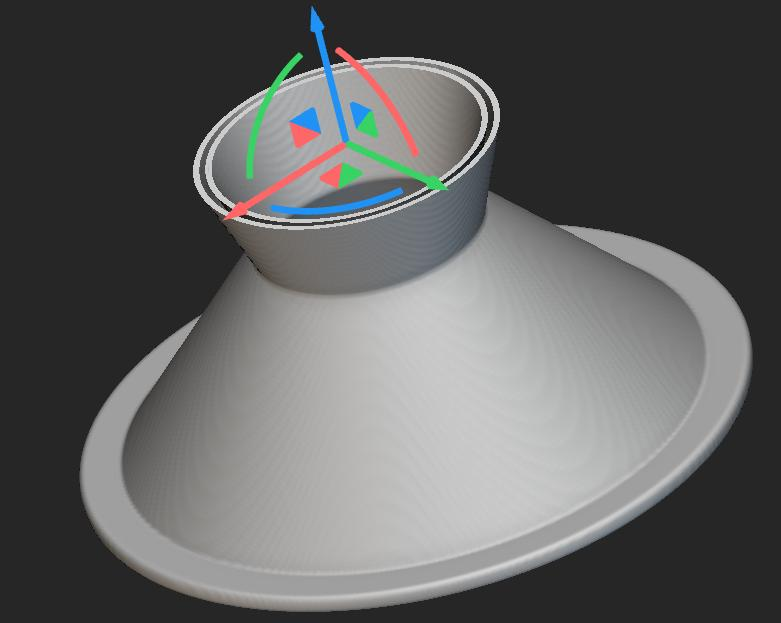
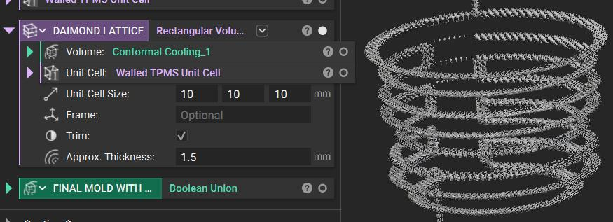
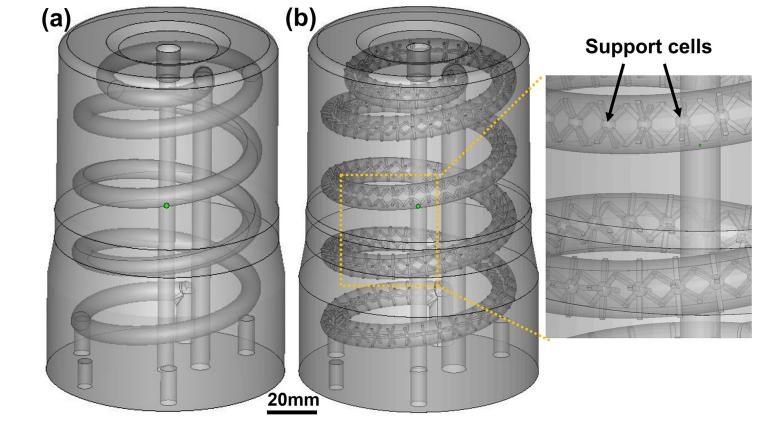
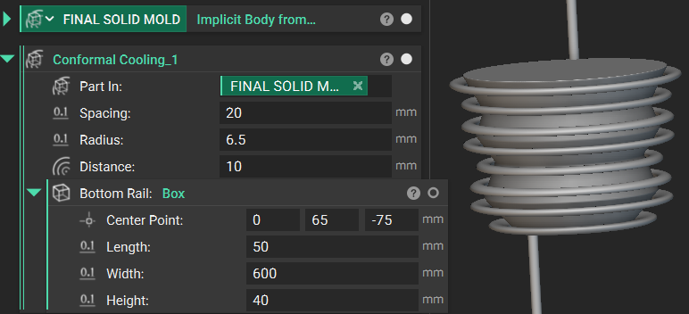

INDIAN INSTITUTE OF TECHNOLOGY PALAKKAD (IIT PKD)
Selected for a competitive research internship at IIT Palakkad's Welding Technology Lab. The research focused on advanced geometric synthesis for thermal and propulsion applications, applying Autodesk Fusion 360, nTop (nTopology), and Design for Additive Manufacturing (DfAM) principles.
Designed Triply Periodic Minimal Surface (TPMS) based heat exchangers and conformal cooling molds using Fusion 360 and nTop, maximizing convective thermal transfer without assembly joints.
Implemented complex lattice structures and conformal cooling channels for a regenerative rocket nozzle, following strict DfAM design constraints to prevent manufacturing distortion.
Fabricated physical demonstration models of the heat exchanger and rocket nozzle assembly through polymer-based 3D printing for physical inspection and flow passage verification.



